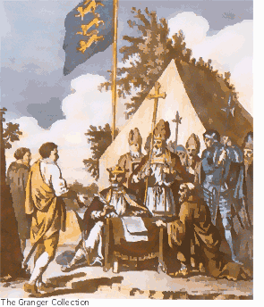

|
 In 1214, a group of courageous barons and church leaders demanded that King John sign a charter of liberties that would free them from excessive or arbitrary taxes and demands. Under threat of open revolt, King John signed Magna Carta on June 15, 1215. Historians have concluded, however, that false King John never intended to abide by his sacred pledge. God called the King to judgment in 1216. John's son Henry was only 9 years old when he succeeded to the throne. His advisors reissued a shortened version of the charter on behalf of the new king. King Henry reissued the charter himself in 1225. Although King Henry observed some provisions of the charter, he stubbornly refused to listen to the advice of his barons. King Edward, however, has proven himself a righteous sovereign by soliciting the counsel of the barons and other men of stature. |